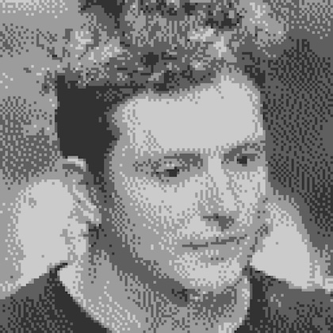

yves spiri
Yves Spiri (he/him) lives in Bern and currently studies MA Sound Design in Zurich. He is obsessed with everything that involves sound, be it music, games, film, events, or other art forms.
His approach has been to experience as many different roles and perspectives when working with sound: production, engineering, mixing, mastering, event organizing, curation, booking, teaching, and sound design for advertisements and animation films. Sound design for games is still missing and is probably his most anticipated role to date, as Yves is a big game nerd who has been observing the industry by playing games and listening to countless hours of interviews with veterans and insiders.
Yves has been working with sound and media creatively and technically for over ten years. At the same time, he feels his journey has only just begun and is more eager and excited than ever to work on projects, preferably film and games. Yves has been releasing music under the pseudonym "Yotah" and is always working on the next piece, learning as he goes.
Want to work together? Check out his work and get in touch.
Email: hi@yvesspiri.net
Instagram: @yotahmusic
SoundCloud: soundcloud.com/yotahhh